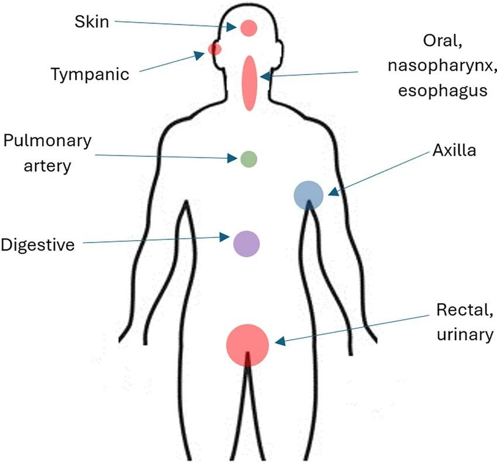
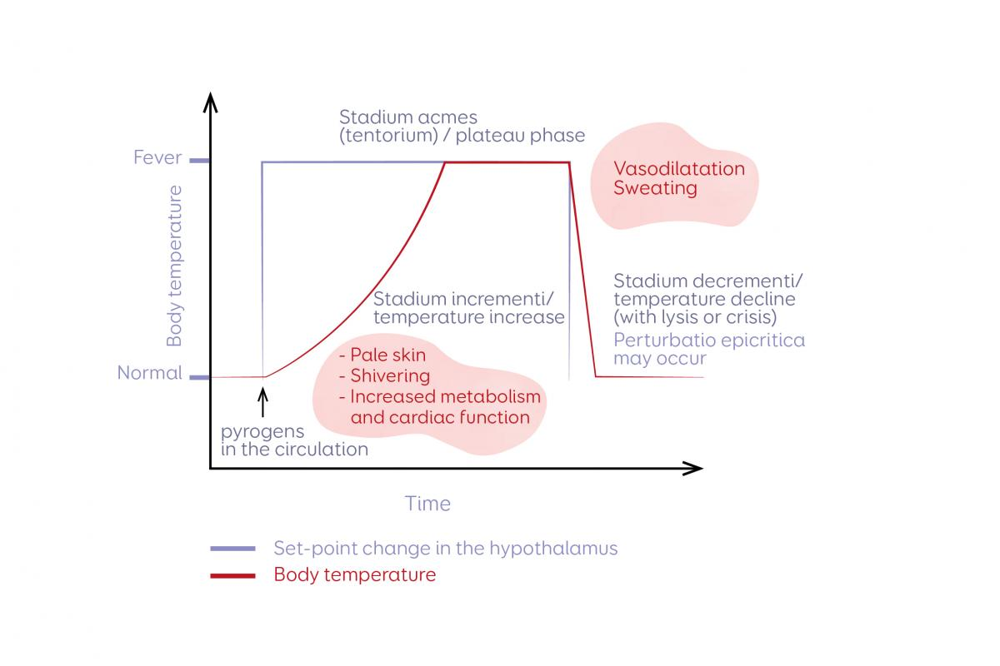
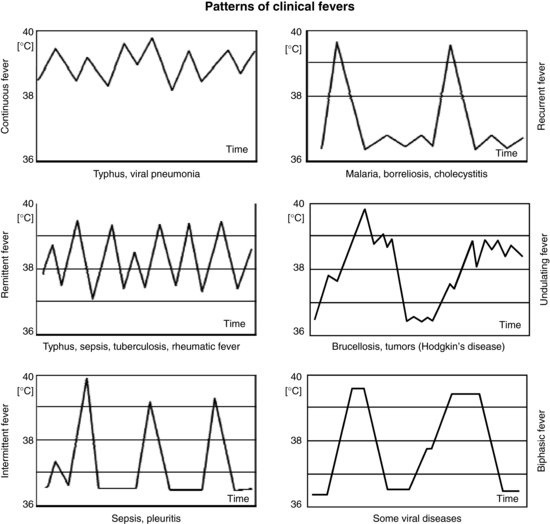
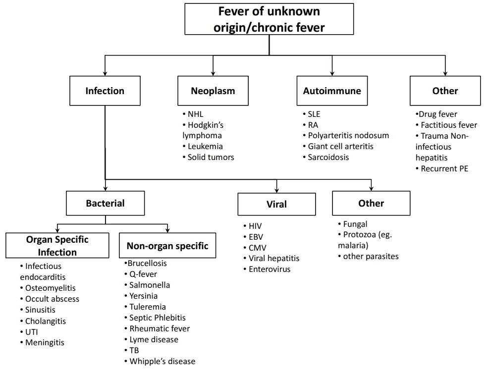

Sindromul febril
Febra · Hipertermia · Șocul termic · Febra de origine necunoscută
Febra este cel mai frecvent motiv de prezentare la medic în întreaga lume și este prezentă în până la 72% din cazurile de pacienți spitalizați cu patologie infecțioasă. Ca medic de familie, vei fi primul care evaluează un pacient febril — iar deciziile tale din primele minute (investigații, tratament simptomatic vs. trimitere la urgență) pot face diferența între o viroză banală și un sepsis incipient. Înțelegerea mecanismelor termoreglării, a diferenței fundamentale dintre febră și hipertermie, și a algoritmului sistematic de evaluare te va ajuta să triezi rapid și să nu ratezi niciodată „red flag-urile" care necesită intervenție imediată.
Termoreglarea și definiția febrei
Temperatura corpului uman este menținută într-un echilibru dinamic între termogeneză (producerea de căldură) și termoliză (disiparea căldurii), sub controlul centrilor termoreglători din hipotalamus. În condiții bazale, ficatul contribuie cu aproximativ 30% din producția de căldură, iar musculatura striată cu 40%. În timpul efortului fizic sau al expunerii la frig, musculatura devine sursa dominantă (>90%), iar frisonul reprezintă cel mai eficient mecanism de termogeneză — declanșat de hipotalamusul posterior prin motoneuronii alfa și gamma.
Termoliza se realizează prin patru mecanisme principale: radiația (60% din pierderea totală de căldură, prin emisie de infraroșu când temperatura ambiantă <35°C), convecția (10%, prin curenții de aer), conducția (2%, transfer direct — relevant la imersie în apă) și evaporarea (28%, prin perspirație insensibilă și sudație activă — devine mecanismul dominant la efort intens sau mediu supraîncălzit, dar ineficient la umiditate crescută).
Definiția febrei: creșterea temperaturii bazale peste 38°C, în absența activității fizice intense, prin modificarea punctului de echilibru termic hipotalamic. Subfebrilitatea (37,5–38°C) și hiperpirexia (>39°C) sunt extensii ale aceluiași spectru. La vârstnici (>65 ani), pragul este mai scăzut: IDSA definește febra ca temperatură orală >37°C sau rectală >37,5°C, deoarece termosenzorii se alterează cu vârsta, iar răspunsul febril poate fi atenuat. La sugari și copii, febra se definește ca temperatură rectală ≥38°C.

Temperatura rectală este cea mai apropiată de temperatura centrală și rămâne standardul de referință. Termometria axilară — cea mai frecventă în practica MF — subestimează temperatura centrală cu ~0,5°C, deci un pacient cu 37,6°C axilar poate avea de fapt 38,1°C central (febril!). Termometria timpanică este rapidă dar imprecisă (cerumen, otită, tehnica incorectă). Regula practică: la măsurarea axilară, adaugă mental +0,5°C pentru a estima temperatura reală." data-sursa="https://www.researchgate.net/figure/Common-temperature-measurement-locations_fig1_382460378">Temperatura rectală este cea mai apropiată de temperatura centrală și rămâne standardul de referință. Termometria axilară — cea mai frecventă în practica MF — subestimează temperatura centrală cu ~0,5°C, deci un pacient cu 37,6°C axilar poate avea de fapt 38,1°C central (febril!)....
Temperatura rectală este cea mai apropiată de temperatura centrală și rămâne standardul de referință. Termometria axilară — cea mai frecventă în practica MF — subestimează temperatura centrală cu ~0,5°C, deci un pacient cu 37,6°C axilar poate avea de fapt 38,1°C central (febril!). Termometria timpanică este rapidă dar imprecisă (cerumen, otită, tehnica incorectă). Regula practică: la măsurarea axilară, adaugă mental +0,5°C pentru a estima temperatura reală.
Temperatura rectală reflectă cel mai fidel temperatura centrală deoarece rectul este bine vascularizat și izolat de factorii externi (respirație, alimente calde/reci, temperatura ambiantă) care afectează măsurătorile orale, axilare sau tegumentare. Temperatura axilară poate subestima febra cu până la 1°C — ceea ce înseamnă că un pacient cu 37,5°C axilar poate avea de fapt 38,5°C central. Aceasta este o capcană frecventă în triajul pacienților vârstnici sau imunosupresați.
B) GREȘIT — La vârstnici, pragul febrei este mai scăzut. O temperatură orală de 37,3°C poate masca o infecție severă, deoarece răspunsul febril este atenuat cu vârsta.
D) GREȘIT — Hipotiroidismul poate reduce temperatura bazală, dar valoarea de 37,3°C este supra-normală la un vârstnic și nu sugerează hipotermie.
E) GREȘIT — Administrarea de antipiretic fără investigații la un vârstnic cu comorbidități și simptome de 3 zile poate întârzia diagnosticul unei infecții grave (ITU, pneumonie, endocardită).
Fiziopatologia febrei — pirogeni și cascada inflamatorie
Febra nu este o „defecțiune" a termostatului, ci un răspuns imun activ, programat care conferă avantaje biologice. Mecanismul implică o cascadă bine definită: pirogenii exogeni (componente bacteriene precum lipopolizaharidele Gram-negative, acizi teicoici Gram-pozitivi, toxine virale, antigene fungice, complexe imune) activează macrofagele, monocitele și alte celule ale imunității înnăscute. Acestea eliberează pirogeni endogeni — citokine cu rol regulator: IL-1α și IL-1β, IL-6, TNF-α, interferonii (IFN-α, IFN-β, IFN-γ) și IL-8.
Pirogenii endogeni acționează la nivelul organum vasculosum laminae terminalis (OVLT), o structură neuronală din hipotalamusul anterior lipsită de barieră hemato-encefalică. Aici stimulează producția de prostaglandină E₂ (PGE₂) prin activarea ciclooxigenazei (COX-2). PGE₂ acționează ca transmițător central, ridicând „set point-ul" termostatului hipotalamic. Consecința: organismul „percepe" temperatura normală ca fiind prea scăzută și activează mecanismele de termogeneză — vasoconstricție periferică (senzația de frig), creșterea tonusului muscular și frison.
Endotoxinele bacteriilor Gram-negative (lipopolizaharidele) au o particularitate: pot induce febra atât direct (acțiune asupra SNC) cât și indirect (prin producția periferică de PGE₂, în special la nivelul celulelor Kupffer hepatice). Aceasta explică de ce bacteriemiile cu Gram-negativi pot produce febră brutală, cu frison solemn, chiar înainte de răspunsul citokinic complet.

Graficul ilustrează relația dintre set point-ul hipotalamic (linia albastră, care crește brusc la apariția pirogenilor) și temperatura corporală reală (linia roșie, care „aleargă" după noul set point). Fazele — incrementi (frison, vasoconstricție), platou (echilibru la nivel febril) și decrementum (vasodilatație, sudație) — explică de ce pacientul simte frig la debutul febrei, deși temperatura crește." data-sursa="">Graficul ilustrează relația dintre set point-ul hipotalamic (linia albastră, care crește brusc la apariția pirogenilor) și temperatura corporală reală (linia roșie, care „aleargă" după noul set point). Fazele — incrementi (frison, vasoconstricție), platou (echilibru la nivel febril) și decrementum...
Graficul ilustrează relația dintre set point-ul hipotalamic (linia albastră, care crește brusc la apariția pirogenilor) și temperatura corporală reală (linia roșie, care „aleargă" după noul set point). Fazele — incrementi (frison, vasoconstricție), platou (echilibru la nivel febril) și decrementum (vasodilatație, sudație) — explică de ce pacientul simte frig la debutul febrei, deși temperatura crește.
Febra nu este doar un simptom de combătut — este un mecanism adaptativ cu beneficii dovedite: crește mobilitatea și fagocitoza neutrofilelor, stimulează producția de interferon (efect antiviral), potențează activitatea celulelor NK, accelerează sinteza hepatică a proteinelor de fază acută (PCR, fibrinogen) și crește eficacitatea antibioticelor. În plus, febra scade nivelul seric de fier, zinc și cupru — cationi esențiali pentru multiplicarea bacteriană. Aceasta explică de ce tratamentul agresiv al febrei moderate (38–39°C) la pacienți imunocompetenți nu este întotdeauna benefic și poate chiar prelungi evoluția unor infecții.
Deși febra este un mecanism protector, ea impune costuri metabolice semnificative: fiecare grad Celsius peste normal crește consumul de oxigen cu 13%. La pacienți cu rezervă cardiopulmonară limitată (insuficiență cardiacă, BPOC, anemie severă), aceasta poate precipita decompensarea. Alte riscuri: convulsii febrile la copii între 6 luni și 5 ani, delirium la vârstnici, translocație bacteriană intestinală (care poate precipita sau agrava un sepsis), și efect teratogen în primul trimestru de sarcină (risc crescut de defecte cardiace și de tub neural).
B) GREȘIT — Vasodilatația periferică este o consecință a scăderii „set point-ului", nu mecanismul primar al Paracetamolului. Paracetamolul nu acționează pe vasele periferice.
D) GREȘIT — Criogenii endogeni (vasopresina argininică, α-MSH) sunt mecanisme endogene de limitare a febrei, dar Paracetamolul nu le stimulează. Acești mediatori limitează febra la un plafon de aproximativ 41°C.
E) GREȘIT — Paracetamolul nu are efect antiinflamator periferic semnificativ și nu inhibă producția de citokine. Aceasta este o diferență importantă față de AINS-urile clasice.
Tipurile de curbe febrile și semnificația lor clinică
Curba febrilă — reprezentarea grafică a temperaturii în timp — este un instrument diagnostic subevaluat în era investigațiilor moderne. Tipul de curbă febrilă poate orienta semnificativ diagnosticul etiologic, mai ales în primele zile de evaluare, înainte de a avea rezultatele microbiologice. Distingem șase tipuri principale de curbe febrile, fiecare cu asocieri etiologice specifice.
Febra continuă se caracterizează prin fluctuații zilnice sub 1°C, menținându-se constant la un nivel ridicat. Este pattern-ul clasic al tifosului și al pneumoniei virale în faza de stare. Stabilitatea temperaturii reflectă un stimul pirogen constant, nemodulat de ciclul circadian. Febra remitentă prezintă variații zilnice de peste 1°C, dar temperatura nu revine niciodată la normal. Este tipică pentru sepsis, tuberculoză și reumatism articular acut — condiții în care stimulul pirogen este persistent dar fluctuant.
Febra intermitentă este cea mai frecventă în practică: temperatura crește în vârfuri (spikes), dar revine la normal sau sub-normal între episoade. Este caracteristică pentru sepsis (mai ales cu Gram-negativi, unde bacteriemiile intermitente produc vârfuri febrile cu frison), pleurită și abcese profunde. Febra recurentă (sau relapsantă) alternează perioade febrile de câteva zile cu perioade complet afebrile. Exemplul clasic este malaria (recurențe la intervale fixe) și borelioza (recurențe neregulate).
Febra ondulantă prezintă creșteri și scăderi graduale pe parcursul a săptămâni — un pattern „în val" caracteristic pentru bruceloză (de unde și numele „febra ondulantă a brucilozei") și limfomul Hodgkin (febra Pel-Ebstein, cu perioade febrile de 1–2 săptămâni alternând cu perioade afebrile similare). Febra bifazică are două episoade febrile separate de un interval afebril de câteva zile — descrisă în unele viroze (inclusiv poliomielita și dengue).

Ce observi: Șase grafice de temperatură vs. timp, fiecare ilustrând un pattern febril distinct: (1) Febra continuă — linie aproape dreaptă peste 38°C (tifos, pneumonie virală); (2) Febra recurentă — vârfuri febrile separate de intervale complet afebrile (malarie, borelioză, colecistită); (3) Febra remitentă — oscilații ample dar mereu peste normal (tifos, sepsis, TBC, RAA); (4) Febra ondulantă — creșteri și scăderi graduale, pattern „în val" (bruceloză, tumori/Hodgkin); (5) Febra intermitentă — spikes până la 40°C cu revenire la normal (sepsis, pleurită); (6) Febra bifazică — două vârfuri febrile cu pauză intermediară (unele viroze)." data-sursa="https://epomedicine.com/clinical-medicine/fever-definition-mechanism-types/">Ce observi: Șase grafice de temperatură vs. timp, fiecare ilustrând un pattern febril distinct: (1) Febra continuă — linie aproape dreaptă peste 38°C (tifos, pneumonie virală); (2) Febra recurentă — vârfuri febrile separate de intervale complet afebrile (malarie, borelioză, colecistită);...
Ce observi: Șase grafice de temperatură vs. timp, fiecare ilustrând un pattern febril distinct: (1) Febra continuă — linie aproape dreaptă peste 38°C (tifos, pneumonie virală); (2) Febra recurentă — vârfuri febrile separate de intervale complet afebrile (malarie, borelioză, colecistită); (3) Febra remitentă — oscilații ample dar mereu peste normal (tifos, sepsis, TBC, RAA); (4) Febra ondulantă — creșteri și scăderi graduale, pattern „în val" (bruceloză, tumori/Hodgkin); (5) Febra intermitentă — spikes până la 40°C cu revenire la normal (sepsis, pleurită); (6) Febra bifazică — două vârfuri febrile cu pauză intermediară (unele viroze).
C) GREȘIT — Febra tifoidă produce clasic o febră continuă (variații <1°C), nu recurentă cu intervale afebrile. De asemenea, pacientul nu prezintă simptomele tipice (bradicardie relativă, hepatosplenomegalie, roseole).
D) GREȘIT — Pneumoniile atipice produc febră remitentă, nu recurentă cu interval fix de 48h.
E) GREȘIT — Febra Pel-Ebstein din limfomul Hodgkin are perioade febrile de 1-2 săptămâni, nu de ore, și nu are periodicitate fixă.
Febră vs. Hipertermie — o distincție vitală
Distincția dintre febră și hipertermie este fundamentală pentru tratament — și este una dintre cele mai frecvente confuzii în practica clinică. Ambele produc creșterea temperaturii corporale, dar prin mecanisme complet diferite, cu implicații terapeutice opuse.
Febra este rezultatul unei modificări active a set point-ului hipotalamic sub acțiunea PGE₂. Termostatul este „setat" la un nivel superior (de exemplu, 39°C), iar organismul activează mecanism de termogeneză (frison, vasoconstricție) pentru a ajunge la noul prag. Pacientul simte frig deși temperatura corporală crește. Temperatura febrilă este autolimitată la aproximativ 41°C datorită criogenilor endogeni (vasopresina argininică, α-MSH). Antipiretice (Paracetamol, Ibuprofen) sunt eficiente deoarece blochează PGE₂ și permit revenirea set point-ului.
Hipertermia este rezultatul incapacității organismului de a disipa căldura, cu set point-ul hipotalamic nemodificat. Termostatul „știe" că temperatura este prea mare, dar mecanismele de termoliză sunt depășite (expunere la căldură extremă, efort fizic intens, umiditate ridicată) sau disfuncționale (anticolinergice, deshidratare, patologii ale glandelor sudoripare). Pacientul simte cald și transpiră intens (sau, în formele severe, pielea devine uscată deoarece glandele sudoripare s-au epuizat). Temperatura poate depăși 41°C fără autolimitare. Antipiretice sunt complet ineficiente — inhibarea PGE₂ nu ajută când set point-ul nu este modificat. Tratamentul este răcire externă (comprese, gheață, imersie în apă rece).
Febră
- Febră = Set point hipotalamic modificat (↑) de PGE₂
- Febră = Cauze: infecții, inflamație, neoplasme, medicamente
- Febră = Frison PREZENT (organismul „vrea" să ajungă la noul set point)
- Febră = Temperatura autolimitată la ~41°C (criogeni endogeni)
- Febră = Antipiretice EFICIENTE (blochează COX → PGE₂)
- Febră = Sudație la defervescență
Hipertermie
- Hipertermie = Set point hipotalamic NORMAL — incapacitate de termoliză
- Hipertermie = Cauze: expunere la căldură, efort fizic, anticolinergice, deshidratare
- Hipertermie = Frison ABSENT (organismul încearcă să se răcească)
- Hipertermie = Temperatura poate depăși 41°C fără limită superioară
- Hipertermie = Antipiretice INEFICIENTE — răcire externă obligatorie
- Hipertermie = Piele uscată în formele severe (epuizare sudoripară)
Antipiretice (Paracetamol, Ibuprofen, Aspirină) acționează prin inhibarea ciclooxigenazei (COX), blocând sinteza de PGE₂ la nivel hipotalamic. În hipertermie, PGE₂ nu este implicată — set point-ul este normal, problema este incapacitatea de disipare a căldurii. Administrarea de antipiretic în șocul termic nu doar că este inutilă, ci poate fi dăunătoare: Paracetamolul în doze repetate la un pacient cu hipertermie severă (care deja are suferință hepatică de ischemie) poate precipita hepatotoxicitate. Singurul tratament eficient este răcirea externă agresivă.
B) GREȘIT — Calea de administrare nu schimbă faptul că antipireticul nu are efect în hipertermie.
C) GREȘIT — Problema nu este doza, ci indicația. Paracetamolul în orice doză este ineficient în hipertermie deoarece mecanismul nu implică PGE₂.
E) GREȘIT — Hidratarea este necesară, dar afirmația că Paracetamolul este corect este falsă.
Evaluarea pacientului febril — abordare sistematică
Evaluarea pacientului febril urmează o abordare sistematică care pornește de la anamneza direcționată, continuă cu examenul fizic complet și se completează cu investigații paraclinice orientate de tabloul clinic. Scopul nu este doar identificarea etiologiei, ci mai ales triajul rapid — separarea pacienților care pot fi gestionați ambulatoriu de cei care necesită internare sau trimitere la urgență.
Anamneza trebuie să clarifice: durata și pattern-ul febrei (acută <7 zile, subacută 7-21 zile, prelungită >21 zile), simptomele asociate orientative (tuse, disurie, cefalee, erupție, diaree), călătoriile recente (zone tropicale → malarie, tifoidă), expunerea ocupațională sau la animale, medicamentele noi (febra medicamentoasă apare tipic la 7-10 zile de la inițiere), contactul cu persoane bolnave, statusul imun (HIV, chimioterapie, corticoterapie, splenectomie), și prezența dispozitivelor medicale (catetere, proteze).
Examenul fizic trebuie să fie complet și sistematic, nu orientat doar spre simptomul dominant. Atenție specială la: tegumente (erupție, peteșii, escare de inoculare), mucoase (aftoză, enanteme), adenopatii (localizate vs. generalizate), articulații (tumefiere, durere), examenul abdominal (hepatosplenomegalie, apărare), auscultatia pulmonară și cardiacă (sufluri noi → endocardită), și examenul neurologic (rigiditate de ceafă → meningită, alterarea senzoriului → encefalită).
Investigațiile de primă linie includ: hemograma cu formulă leucocitară (leucocitoză cu neutrofilie → infecție bacteriană; leucopenie → infecție virală, bruceloză, tifoidă, sepsis sever), PCR (marker inflamator rapid), procalcitonina (diferențiază infecție bacteriană de virală), hemocultură (două seturi, din vene diferite, ÎNAINTE de antibiotic), sumar urină + urocultură, radiografie toracică, și investigații orientate de tabloul clinic (puncție lombară, ecografie abdominală, CT).
Două seturi de hemocultură, din vene diferite, la interval de minim 15 minute, ÎNAINTE de prima doză de antibiotic. Fiecare set conține un flacon aerob și un flacon anaerob (20 mL sânge total per set). Prelevarea din cateter venos periferic deja prezent crește rata de contaminare. Practic, hemocultura prelevată DUPĂ antibioterapie are sensibilitatea redusă cu până la 35%.
C) GREȘIT — Brucela produce leucopenie, dar febra ar trebui să fie ondulantă (nu continuă de 5 zile), iar expunerea epidemiologică (contact cu animale, produse lactate nepasteurizate) lipsește.
D) GREȘIT — Leucemia acută poate produce citopenii și adenopatii, dar hemograma ar arăta blaști circulanți sau citopenii pe mai multe linii (anemie, trombocitopenie), nu doar leucopenie izolată cu limfocite atipice.
E) GREȘIT — Infecțiile bacteriene streptococice produc tipic leucocitoză cu neutrofilie, nu leucopenie cu limfocitoză. De asemenea, faringita streptococică se prezintă cu exudat amigdalian, nu faringe eritematoasă difuză.
Febra de origine necunoscută (FUO)
Febra de origine necunoscută (FUO — Fever of Unknown Origin) reprezintă una dintre cele mai provocatoare situații clinice, necesitând o abordare sistematică și răbdare diagnostică. Definiția clasică (Petersdorf și Beeson, 1961) include trei criterii simultane: temperatură >38,3°C la multiple măsurători, durată >3 săptămâni, și diagnostic incert după o săptămână de investigații în spital (criteriu adaptat în era modernă la 3 vizite ambulatorii sau 3 zile de spitalizare).
Etiologia FUO se grupează în patru categorii mari: infecțiile (20-40% din cazuri — endocardită infecțioasă, abcese profunde, tuberculoză, osteomielită, infecții asociate cateterelor), neoplasmele (10-20% — limfoame, în special Hodgkin, leucemii, tumori solide cu necroză), bolile autoimune (15-25% — lupus eritematos sistemic, poliarterită nodoasă, arterită cu celule gigante, sarcoidoză) și cauze diverse (15-25% — febra medicamentoasă, embolie pulmonară recurentă, tireoidita, febra factiță). Într-un procent semnificativ (10-15%), diagnosticul rămâne necunoscut chiar după investigații exhaustive — iar prognosticul acestor cazuri este în general favorabil.
Abordarea diagnostică urmează principiul de la frecvent la rar și de la non-invaziv la invaziv. Re-anamneza detaliată (călătorii, contact cu animale, medicamente — inclusiv suplimente alimentare, contacte infecțioase, ocupație, istoric familial de boli autoimune) descoperă un indiciu în până la 25% din cazuri. CT torace-abdomen-pelvis este investigația imagistică centrală. PET-CT devine din ce în ce mai utilizat, având sensibilitate ridicată pentru infecții oculte și neoplasme. Biopsia (ganglion, măduvă osoasă, ficat) este indicată când investigațiile non-invazive nu sunt concludente.

Algoritmul separă cele 4 mari categorii etiologice ale FUO — infecții, neoplasme, autoimune, alte cauze — și ghidează investigarea sistematică de la frecvent la rar. Util pentru a nu omite nicio categorie în evaluarea unui pacient cu febră prelungită." data-sursa="https://manualofmedicine.com/topics/fever-of-unknown-origin-fuo-diagnostic-challenge/">Algoritmul separă cele 4 mari categorii etiologice ale FUO — infecții, neoplasme, autoimune, alte cauze — și ghidează investigarea sistematică de la frecvent la rar. Util pentru a nu omite nicio categorie în evaluarea unui pacient cu febră prelungită.
Când investigațiile standard sunt negative, câteva indicii clinice subtile pot deblocă diagnosticul: bradicardia relativă (puls care nu crește proporțional cu temperatura) sugerează febra tifoidă, bruceloză, febra medicamentoasă sau limfom. Febra care răspunde la AINS dar nu la Paracetamol sugerează limfom sau neoplazie (sensibilitate la Naproxen — „testul Naproxen"). Erupția evanescentă (care apare doar în timpul vârfurilor febrile) sugerează boala Still a adultului. Hepatosplenomegalia izolată orientează spre limfom, leishmanioza viscerală sau bruceloză. Aceste „perle clinice" nu înlocuiesc investigațiile, dar le orientează eficient.
Managementul febrei — când și cum tratăm
Nu orice febră necesită tratament antipiretic. Aceasta este o nuanță importantă pe care medicul de familie trebuie să o comunice pacienților și familiilor. Febra moderată (38-39°C) la un adult imunocompetent, fără comorbidități cardiopulmonare, este un răspuns imun benefic care accelerează clearance-ul infecțios și potențează eficacitatea antibioticelor. Tratarea agresivă a fiecărui episod febril nu doar că nu scurtează boala, ci poate prelungi evoluția unor infecții virale.
Indicațiile tratamentului antipiretic includ: disconfort semnificativ al pacientului (cefalee severă, mialgii invalidante, insomnie), temperatură >39°C, comorbidități care nu tolerează creșterea consumului de oxigen (insuficiență cardiacă, BPOC, anemie severă), risc de convulsii febrile la copii (6 luni – 5 ani cu antecedente), și sarcină în primul trimestru (risc teratogen dovedit). La vârstnici și imunosupresați, tratamentul antipiretic poate masca semnele de alarmă — se administrează cu prudență și monitorizare.
Paracetamolul (500-1000 mg la 6-8 ore, maxim 4 g/zi la adulți) este antipiretice de primă linie: eficacitate bună, profil de siguranță favorabil, fără efecte antiinflamatorii periferice. Ibuprofenul (400 mg la 8 ore) este alternativa de a doua linie, cu eficacitate similară dar cu riscuri gastrointestinale și renale adiționale. Aspirina este CONTRAINDICATĂ la copii sub 16 ani datorită riscului de sindrom Reye (encefalopatie hepatică acută, potențial letală). Mijloacele fizice (comprese cu apă călduță, nu rece — care produc vasoconstricție paradoxală și frison) sunt complementare, nu de primă linie.
Antibioterapia empirică nu este sinonimă cu tratamentul febrei. Antibioticul se inițiază doar când există suspiciune clinică fondată de infecție bacteriană, și întotdeauna după prelevarea hemoculturilor. Febra virală, febra medicamentoasă și febra neoplazică nu răspund la antibiotice.
NU administra Aspirină (acid acetilsalicilic) copiilor sub 16 ani cu febră! Sindromul Reye este o encefalopatie hepatică acută rară dar potențial fatală (mortalitate 20-40%), asociată cu administrarea de Aspirină în context viral (în special gripă și varicelă) la copii. Prezentare: vărsături incoercibile, somnolență progresivă, convulsii, comă. Alternative sigure: Paracetamol (15 mg/kg la 6h) sau Ibuprofen (10 mg/kg la 8h).
Șocul termic — urgența hipertermică
Șocul termic (heat stroke) este o urgență medicală cu mortalitate de 10-50% în absența tratamentului prompt. Se definește prin temperatură corporală >40°C asociată cu disfuncție neurologică (confuzie, agitație, convulsii, comă), în contextul incapacității de termoreglare. Este forma cea mai severă din spectrul bolilor asociate căldurii (crampe de căldură → epuizare termică → șoc termic).
Se descriu două forme: șocul termic clasic (la vârstnici, bolnavi cronici, în valuri de căldură — piele uscată, fierbinte, anhidroză) și șocul termic de efort (la tineri, sportivi, militari — poate păstra transpirația). Factorii de risc includ: vârsta extremă (vârstnici cu termoreglare alterată, sugari cu raport suprafață/volum mare), medicamentele anticolinergice (antihistaminice, antidepresive triciclice, antipsihotice), deshidratarea, obezitatea, și absența aclimatizării la căldură.
Fiziopatologia implică o spirală vicioasă: hipertermia produce leziuni celulare directe (denaturare proteică, destabilizare membranară), care induc un răspuns inflamator sistemic (similar SIRS), care la rândul său agravează hipertermia prin producție metabolică de căldură. Complicațiile includ: rabdomioliză (CK crescut masiv, mioglobinurie → insuficiență renală acută), coagulopatie intravasculară diseminată (CID), insuficiență hepatică acută, sindrom de detresă respiratorie acută (ARDS) și insuficiență multiorganică.
Managementul este o urgență temporală: fiecare minut de întârziere în inițierea răcirii crește mortalitatea. Protocolul include: dezbrăcarea completă, imersie în apă la 2°C (metoda cea mai eficientă, scade temperatura cu 0,2°C/minut) sau, când nu este disponibilă, aplicarea de comprese cu gheață la nivelul zonelor cu vase mari superficiale (axile, gât, inguinal) + vaporizare cu apă + ventilator. Răcirea se oprește când temperatura atinge 38,5°C (pentru a preveni hipotermia iatrogenă). Resuscitarea volemică (NaCl 0,9% IV), monitorizarea CK, funcției renale, coagulării și electroliților sunt esențiale. Antipiretice sunt inutile și potențial dăunătoare (hepatotoxicitate Paracetamol pe ficat ischemiat).
B) GREȘIT — Dantrolenul este indicat în hipertermia malignă (reacție idiosincratică la anestezice volatile), nu în șocul termic. Mecanismele sunt complet diferite.
C) GREȘIT — Resuscitarea volemică este necesară, dar secundară răcirii. Prioritatea absolută este scăderea temperaturii centrale.
E) GREȘIT — Protecția căilor aeriene este importantă (Glasgow 7 = indicație relativă de intubație), dar NU înaintea răcirii. Un pacient intubat cu T 41,8°C continuă să acumuleze leziuni multiorganice. Răcirea nu necesită echipament special — se poate iniția imediat.
Recapitulare și consolidare
Febra = ridicarea activă a set point-ului hipotalamic de către PGE₂ (antipiretice eficiente, autolimitare la ~41°C). Hipertermia = incapacitatea de termoliză cu set point normal (antipiretice inutile, T poate depăși 41°C, urgență!).
Infecții (20-40%): endocardită, TBC, abcese profunde. Neoplasme (10-20%): limfom Hodgkin, leucemii. Autoimune (15-25%): LES, vasculite, sarcoidoză. Diverse (15-25%): febra medicamentoasă, TEP recurent, febra factice.
Risc de sindrom Reye — encefalopatie hepatică acută rară dar potențial fatală (mortalitate 20-40%), asociată cu administrarea de Aspirină în context de infecție virală (în special gripă/varicelă) la copii sub 16 ani. Alternative: Paracetamol 15 mg/kg/6h, Ibuprofen 10 mg/kg/8h.
Două seturi, din vene diferite, la interval de minim 15 minute, ÎNAINTE de prima doză de antibiotic. Fiecare set = 1 flacon aerob + 1 flacon anaerob (20 mL sânge total/set). Prelevarea după antibiotic scade sensibilitatea cu ~35%.
Febra care nu cedează
Un bărbat de 34 de ani, fermier din zona rurală a județului Tulcea, se prezintă la cabinetul de medicină de familie acuzând febră ondulantă de aproximativ 4 săptămâni. Descrie perioade de febră ridicată (39-40°C) alternând cu perioade în care se simte mai bine, dar nu complet afebril. Asociază transpirații nocturne profuze, astenie marcată și dureri articulare difuze. A luat Paracetamol fără efect semnificativ asupra duratei febrei.
Pacientul este cooperant și dispus să ofere detalii. Completează anamneza.
C) GREȘIT — Reacțiile post-vaccinale produc febră tranzitorie (1-3 zile), nu un sindrom febril ondulant de 4 săptămâni.
D) GREȘIT — Hepatita alcoolică poate produce febră, dar pattern-ul ondulant de 4 săptămâni cu artralgii la un fermier tânăr orientează mai degrabă spre o zoonoză.
E) GREȘIT — Malaria produce febră recurentă (nu ondulantă) cu periodicitate fixă, și necesită expunere în zonă endemică (Africa, Asia de Sud-Est). Tulcea nu este zonă endemică pentru malarie.
Pacientul confirmă că lucrează cu bovine și consumă regulat brânză de casă nepasteurizată. La examenul fizic, obiectivezi: T 39,2°C, AV 88/min (bradicardie relativă!), TA 120/70 mmHg. Hepatosplenomegalie (ficat la 3 cm sub rebordul costal, splina palpabilă). Articulații fără tumefiere evidentă, dar dureroase la mobilizare (sacroiliace bilateral).
C) GREȘIT — TA normală nu exclude sepsisul incipient. Sepsisul poate avea TA normală în fazele inițiale (mai ales la tineri cu rezervă hemodinamică bună).
D) GREȘIT — Sacroileita este frecventă în bruceloză (osteoarticulară = cea mai frecventă complicație, 20-40%), dar și în spondilita anchilozantă. Contextul febril ondulant cu hepatosplenomegalie diferențiază.
E) GREȘIT — Hepatomegalia izolată ar sugera hepatită, dar aici avem hepatoSPLENOmegalie — combinația este mai sugestivă pentru o infecție sistemică (bruceloză, tifoidă) sau limfoproliferare.
Investigații: Leucocite 3.200/mm³ (leucopenie), Hb 13,5 g/dL, Trombocite 130.000/mm³ (trombocitopenie ușoară), VSH 55 mm/h, PCR 45 mg/L, TGO 67 U/L, TGP 89 U/L (citoliză hepatică ușoară). Hemoculturile sunt în curs (necesită incubare prelungită).
C) GREȘIT — Leucocitoza și transaminazele normale nu corespund profilului brucelozei.
D) GREȘIT — Leucocitoza cu neutrofilie este tipică pentru infecții bacteriene piogene (pneumococ, stafilococ), nu pentru bruceloză care produce clasic leucopenie.
E) GREȘIT — Anemia severă cu trombocitoză reactivă nu face parte din tabloul tipic de bruceloză.
Serologia Wright (aglutinare) revine pozitivă cu titru 1:320 (>1:160 = pozitiv). Hemoculturile devin pozitive la ziua 7 cu Brucella melitensis.
B) GREȘIT — Amoxicilina + Metronidazol este un regim pentru infecții anaerobe, nu pentru Brucella. Durata de 10 zile este complet inadecvată.
D) GREȘIT — Monoterapia cu Doxiciclină are rată de recidivă inacceptabil de mare (>30%). Regimul OMS impune obligatoriu biterapie.
E) GREȘIT — Fluorochinolonele nu sunt de primă linie în bruceloză. Durata de 2 săptămâni este insuficientă.
Diagnostic final: Bruceloză acută cu Brucella melitensis, dobândită prin contact cu bovine și consum de produse lactate nepasteurizate.
Lecții cheie: - Febra ondulantă + transpirații nocturne + artralgii la un fermier = bruceloză până la proba contrarie - Bradicardia relativă + hepatosplenomegalie sunt semne clinice orientative - Paraclinic: leucopenie (nu leucocitoză!), trombocitopenie, citoliză hepatică - Hemoculturi: necesită incubare prelungită (semnalează laboratorul!) - Tratament: OBLIGATORIU biterapie, minim 6 săptămâni (Doxiciclină + aminoglicozid) - La medicul de familie: anamneza epidemiologică (ocupație, alimente, animale) este cheia!